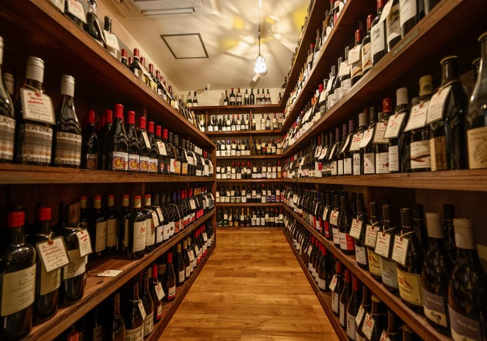

Nossa História

A Vinheria Agnello atua há mais de 15 anos em São Paulo, oferecendo vinhos nacionais e internacionais com foco em qualidade, tradição e atendimento personalizado.
Desde o início de sua trajetória, a empresa se destacou por proporcionar aos clientes uma experiência diferenciada, baseada na orientação especializada sobre tipos de uva, regiões produtoras, rótulos e harmonizações.